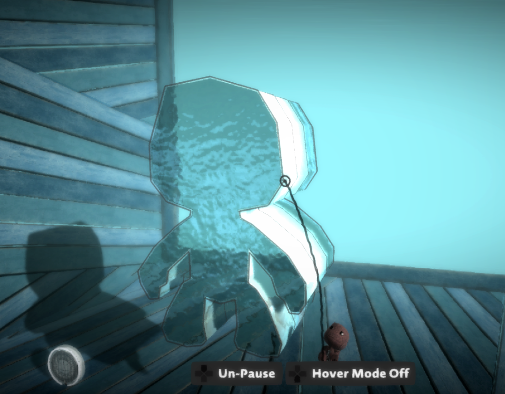
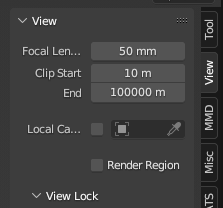
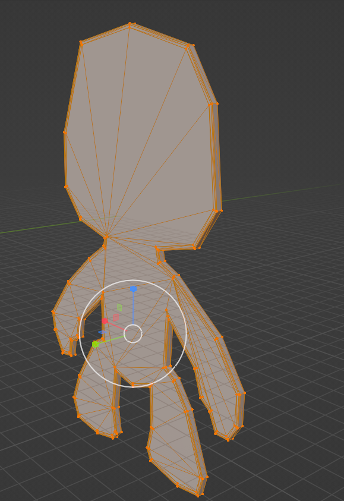
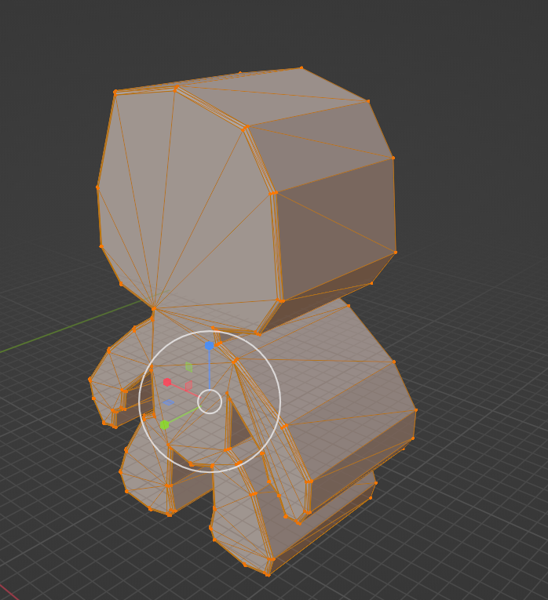

Usage:
Tools needed:(IMPORTANT: I was not able to get it working with OpenGL, so I recommend using Vulkan in RPCS3)
Open RenderDoc, navigate to the "Launch Application" tab and select your RPCS3.exe file and click the Launch button. RPCS3 should now be open, launch the LBP game of your choice, you should now see a "Capturing Vulkan..." overlay in the top left, open a level and create or find the shape you need.Next I will recommend going into front view and centering the mesh on your screen, as we are pulling the mesh from the VS output, which means it will be skewed by the projection and in front view it will only be skewed in the depth rather than horizontally or vertically.

Now press the capture button to capture the frame. A new entry should now appear in RenderDoc, double click it to load it.

Now click the "Texture Viewer" tab and focus on the timeline at the top, start opening the different render passes, and click through the steps until you see the step where your material pops in, make sure the previous step is missing your material.
(I recommend you do this in an empty level with only the shape you want to rip in it)
Navigate to the "Mesh Viewer" tab, you can now select the "VS Out" tab in the "Preview" section, to view a wireframe version of the mesh. If you see the mesh there, right click the VS Out table, that contains all the model data (i.e. VTX, ITX, gl_Position, etc.), and export as CSV.

Scroll to the top of this page, drag and drop the CSV file into the choose file button (or click it and select manually). This should automatically download a generated .obj file. You can now import this into blender. Now like most lbp related blendering, the model will be insanely large, so increase your View clip start and end.
Last but not least, the thickness of the mesh should be completely destroyed because of needing to go into front view to keep the rest of the model in alignment. This unfortunately isn't fixable by putting in a specific value, you will have to approximate the original thickness by manually scaling in the Y direction.
Once that is done you can resize it to whatever size you need it in and use it freely. You will still have to create custom UVs, as the UVs are not provided in the CSV.